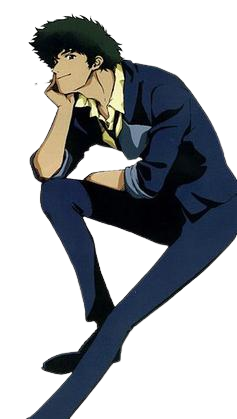

Spike Spiegel é o personagem principal do anime Cowboy Bebop. Ele é um caçador de recompensas ou como eles chamam em várias ocasiões, ele tem uma nave espacial chamada "Bebop" que ele ultiliza para viajar pelo espaço com sua tripulação composta por seu amigo, Jet, e membros novos, Faye, Ed e Ein.
Spike era um membro em ascenção do Sindicato do Crime do Red Dragon (Dragão Vermelho), quando trabalhava com seu parceiro da época, Vicious. Os dois foram orientados por Mao Yenrai. Gravemente ferido após um grande tiroteio nas favelas do planeta marte, Spike tropeçou na casa da namorada de Vicious, Julia. Depois de um tempo o casal se apaixonou enquanto ela cuidava dele para se recuperar dos ferimentos, então após isso Spike decide deixar o sindicato com Julia. Por conta disso Vicious avisou Julia que ele iria matar Spike, ou Spike e Julia se enfrentariam até a morte por ter traído ele. Spike conseguiu finjir sua morte em um tiroteio onde ele estava sozinho contra inimigos desconhecidos, o que fizesse com que o Red Dragon esquecesse dele, depois disso ele esperou Julia para fugirem juntos, mas ela nunca chegou.
Passou um tempo depois de sua falsa morte, e, Spike conhece um ex-policial ISSP que se tornou caçador de recompensas, Jet Black, e se tornaram parceiros. Então Spike se mudou para a nave de Jet, o Bebop, e durante três anos os dois trabalhavam juntos até os novos membros se juntarem.
Spike é um homem de 27 anos de idade, alto e magro. Ele tem cabelo verde-escuro e macio, olhos castanhos-avermelhados, sendo um real e o outro artifícial que foi substituído em uma cirugia. Ele gerlmente está vestindo um terno azul de lazer, com uma camisa amarela e botas inspiradas em Lupin III, um afro de seu cabelo é castnho. e seu conjunto consiste no seu terno azul e calças com a camisa amarela por baixo.